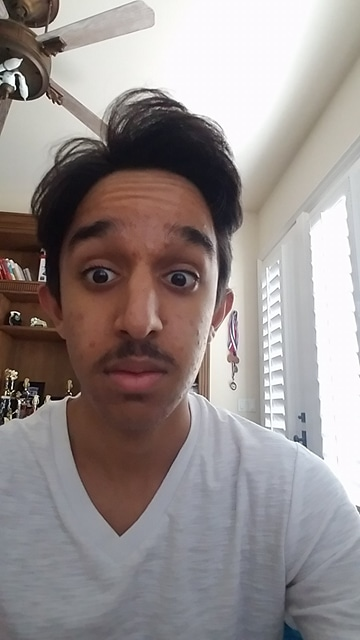

Hi, my name is Moolon. I take AP Computer Science A at Ed. W Clark High School. Before I go into detail about my school life, I want to mention a few things.
For those who came across this website. DO NOT share any of this confidential info with anybody.
This is a picture of me found in the vicinity.
Maybe you're surprised from the picture above, so here's another photo of me.
Here at Clark High School I try to live a relatively peaceful life. Attending the AMSAT magnet program, I have some pride to my name.
Here a few idiots or freaks that you have to wary of:
Prior to meeting the first guy mentioned above, I kept mostly to myself. Back in the day, I was trapped with this fellow He Who Should Not Be Named during lunch. Thankfully, it was just every other day so I had some reprieve in between.
Found below are my classes as of the 2017-2018 School Year.
| Period | Class/Course |
|---|---|
| 0 | AP Calculus BC |
| 1 | AP Physics 1 |
| 2 | AP Lang |
| 3 | Accounting I |
| 4 | Spanish III H |
| 5 | AP Calculus BC |
| 6 | AP Calculus BC/Math Lab Ext |
| 7 | AP US History |
| 8 | AP Computer Science A |
Quite the packed schedule I must say. On top of that, I also attend a few clubs. Namely; NHS (National Honors Society), Rubix Cube Club, and FBLA (Future Business Leaders of America).
I have one brother named Dylan and yes we have the same last name.
But I'll let you in on secret. The famous SAT prep master, Clark High School Alumni, Shark Tank Winner and Partner of Mark Cuban... Yes, the one and only Mr.2400 Shaan Patel!
For more information on my secret brother, please use the link down below.
Shaan PatelThe future is quite uncertain for me. For college, I'll stay here in state within the city of Las Vegas and attend UNLV. I plan to join the honors progran due to my aptitude to take on rigorous amounts of coursework. As shown by the sheer number of AP classes I'm taking as of this year, I have proven to be quite the capable individual.
When I figure out the path I want to follow, I'll buy myself a nice car. Maybe one of those namebrand ones, like a Tesla. No a Ferrari! Or maybe I'll stick with the conventional Toyota or Honda that my dad has. Oh did I mention that I just recently passed my Driver's Test at the local DMV. As of September 29th, 2017 I am officially licensed!